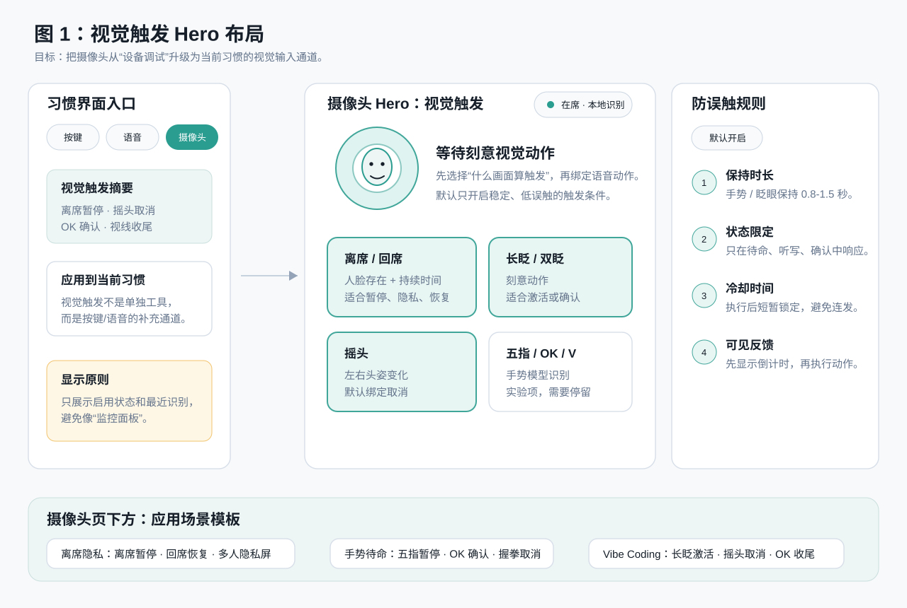
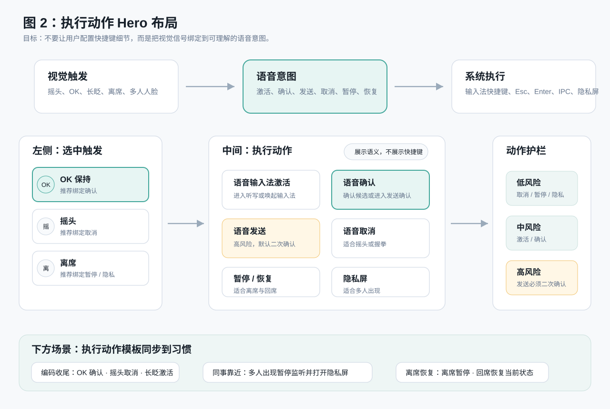
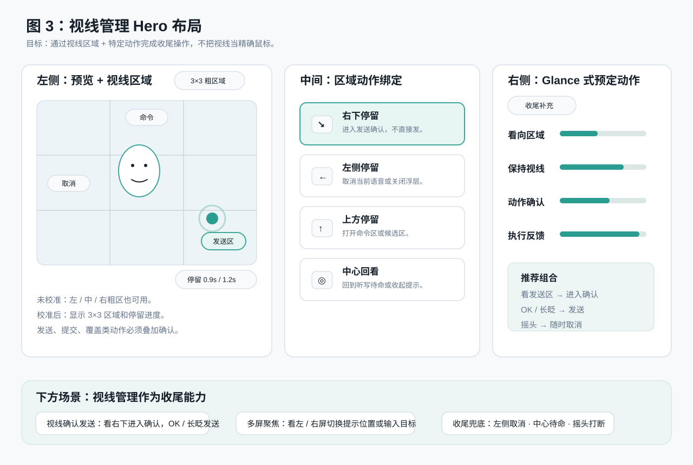
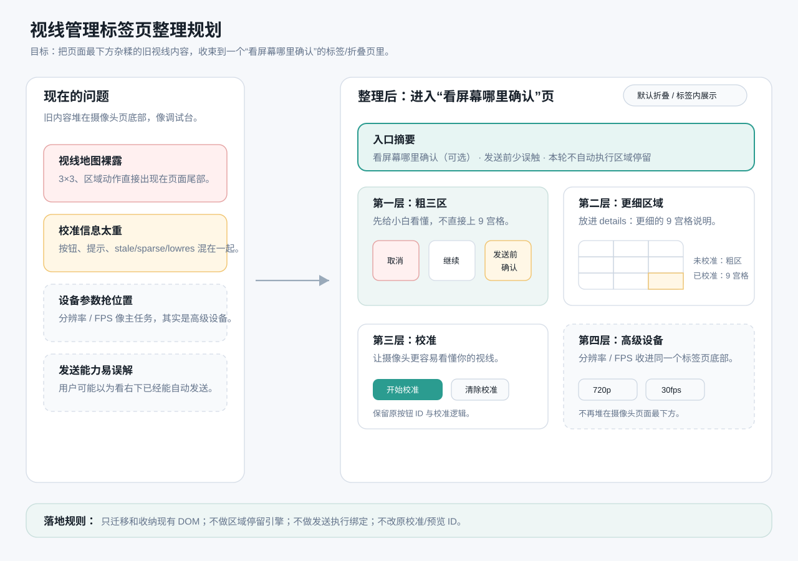

摄像头 Hero 规划
产品能力仍是三段，默认 UI 为两主流程节点 +「看屏幕哪里确认」高级折叠。
打开交互式 Hero 规划主流程：摄像头看到什么 → 识别后做什么。第三段「看屏幕哪里确认（可选）」默认折叠，避免小白以为要学三套。




产品能力仍是三段，默认 UI 为两主流程节点 +「看屏幕哪里确认」高级折叠。
打开交互式 Hero 规划主流程：摄像头看到什么 → 识别后做什么。第三段「看屏幕哪里确认（可选）」默认折叠，避免小白以为要学三套。



